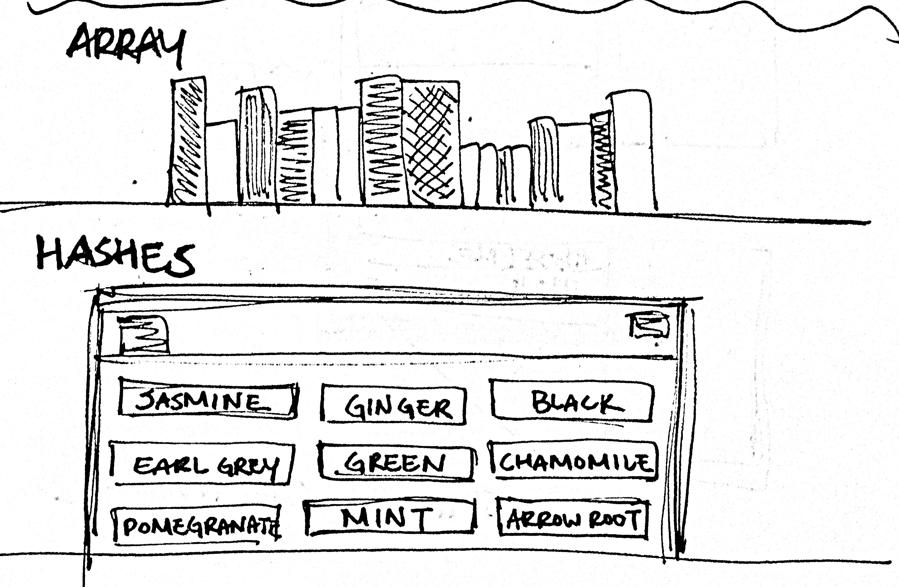

Rachel Yisle Lim

We're in our third week of Phase0 and started diving into Ruby. Feels less frustrating than working with HTML/CSS last week, mostly because I've had some experience with Ruby before applying for code schools. So far we've dipped our toes into solving little puzzles dealing with letters, numbers, basic math operations, conditionals, comparisons, arrays, and hashes. The last two objects I mentioned--arrays and hashes--are data structures that share several similarities, but their differences separate the contexts in which they might be used. I want to point out these similarities and differences so you can ponder with me the potential they both hold in solving real life problems.
As I mentioned above, arrays and hashes are both data structures. To help you visualize, I'll share with you examples of an array and hash:
What are some similarities and differences you see in these two examples?
Similarities:
You can see that arrays and hashes both store/collect information in almost a list-like/linear order fashion. You can also see that you can look up what value/information is stored in a certain "spot" in the "lists". For example, in the array example, you see that in the second spot of the list (shown as fruits[1]) the value "banana" is stored. In the same way, in the hash example, if you look up the second spot of the list (shown as fruits["yellow"]) you also see the value "banana" stored there. Imagine this process of looking up information as a conversation with Ruby that goes like this:
me: "Hey, Ruby--what's the second item I stored in my array?"
Ruby: "Banana."
me: "Cool. What item did I store behind the box labeled 'yellow' in my hash?"
Ruby: "Banana."
me: "Thanks for keeping track of that for me, Ruby."
Differences:
We can see from the dialogue above that Ruby remembers the value stored in our arrays and hashes, but this conversation also brings up some critical differences in how arrays and hashes operate. If you noticed in the conversation, I asked Ruby what the 2nd item was in my array; I referenced a specific numeric spot to retrieve the value, which was the banana. But when I asked Ruby about my hash, I made a reference to an imaginary 'box' that was labeled 'yellow', and asked what was behind it, which was a banana. What seems like a subtle difference actually has a big impact on how I access information. For the array, I have what may be an arbitrary number position (aka index) to reference where the banana is in, whereas for the hash, the word 'yellow' is associated with 'banana'; 'yellow' in this case is called a key, and 'banana' is the value
I kind of like this analogy, as illustrated below. An array is like a sorted shelf of books. You can easily look up the title of the third book on the shelf. A hash, on the other hand, is like a file cabinet. I can open the drawer labeled "Jasmine" and see that I have 3 bags of Jasmine stored in my tea cabinet.

When should I use a Hash or Array?
To be honest, I haven't mastered data structures or used them enough to understand the full potential of hashes and arrays. But based on what I have observed so far, it seems like arrays could be useful for recording random data--the temperature of each day of the week (so you can note what day had the highest temperature), changes in a stock price, test scores (to find my average grade), a list of colors, etc. And hashes could be useful for collecting data that associates with certain categories--dictionaries (word linked with definition), library systems (call number linked with book title), menus (food linked with price), tickets (location, price, time, event all linked with specified information).
The possibilities are endless.